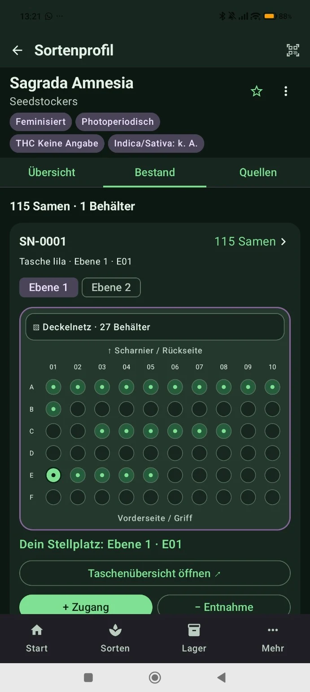

Sortenkatalog
Sorten, Breeder und Genetik im Blick.
SORTEN · LAGER · BESTÄNDE · QR
Die private Android-App für Sortenkatalog, Lagerverwaltung, Bestände und QR-Etiketten – flexibel, sicher und offline nutzbar.



Dashboard · Originalansicht
Sorten, Breeder und Genetik im Blick.
Schrank, Tasche, Ebene und Platz.
Zuordnen, wiederfinden und scannen.
Mengen, Bestände und Planung.
Übersicht über Sorten und Lager.
Daten sichern und wiederherstellen.
SeedNest ist eine Android-App für deine private Cannabis-Samensammlung. Sie verbindet Sortenprofile, Bestände und Lagerplätze.
Die Bestandsverwaltung, der schnelle OCR-Scan und die Rechnungsverarbeitung arbeiten lokal. Webrecherche, Updateprüfung und Downloads benötigen Internet.
Die offizielle Downloadseite enthält die veröffentlichte Alpha-Version, Installationshinweise und die SHA-256-Prüfsumme. Sichere deine Sammlung vor einem Update.